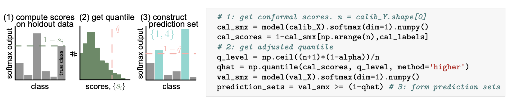

Introduction
딥러닝 모델과 같은 Black-box 머신러닝 모델들은 의료 진단이나 자율 주행과 같은 High-risk 환경에서 일상적으로 사용되고 있습니다.
하지만 이러한 모델들은 종종 잘못된 예측을 내놓으면서도 높은 확신(Overconfidence)을 보이는 문제가 있습니다.
Conformal Prediction(CP)는 이러한 모델의 예측에 대해 통계적으로 엄밀한 불확실성 구간(Uncertainty Sets/Intervals)을 생성하는 방법론입니다.
CP의 가장 큰 장점은 다음과 같습니다:
- Distribution-free: 데이터의 분포에 대한 가정(가우시안 분포 등)이 필요하지 않습니다.
- Model-agnostic: 뉴럴 네트워크를 포함한 어떤 학습된 모델(Pre-trained model)에도 적용 가능합니다.
- Finite-sample guarantee: 무한한 데이터가 아닌, 유한한 샘플 수에서도 통계적 커버리지(\(1-\alpha\))를 보장합니다.
이 글에서는 논문 “A Gentle Introduction to Conformal Prediction and Distribution-Free Uncertainty Quantification”의 핵심 내용을 바탕으로 CP의 원리와 구현 방법을 정리합니다.
The Intuition: Classification Example
- CP를 이해하기 위해 가장 간단한 이미지 분류(Classification) 문제를 예로 들어보겠습니다.
- \(K\)개의 클래스를 분류하는 모델 \(\hat{f}\)가 있다고 가정합시다.
- 이 모델은 입력 이미지 \(x\)에 대해 각 클래스에 속할 확률(Softmax score)을 출력합니다.

우리의 목표는 단순히 가장 높은 확률을 가진 하나의 라벨을 뱉는 것이 아니라, 정답 라벨 \(Y\)를 \(1-\alpha\)(예: 90%)의 확률로 포함하는 후보 라벨들의 집합(Set) \(\mathcal{C}(X)\)를 만드는 것입니다. \[ 1-\alpha \le \mathbb{P}(Y_{test} \in \mathcal{C}(X_{test})) \le 1-\alpha + \frac{1}{n+1} \]
위 식은 Marginal Coverage라고 불리며, Calibration 데이터와 테스트 데이터의 무작위성을 평균했을 때 예측 집합이 정답을 포함할 확률이 \(1-\alpha\) 이상임을 의미합니다.
The Conformal Prediction Algorithm
- CP는 복잡한 최적화 과정 없이 Calibration Step이라고 불리는 간단한 절차를 통해 수행됩니다.
- 핵심은 모델이 학습 과정에서 보지 못한 Calibration Data (약 500개 정도의 소규모 데이터)를 사용하는 것입니다.
Step 1: Calibration Data 준비
- 학습에 사용되지 않은 \(n\)개의 데이터 쌍 \((X_1, Y_1), \dots, (X_n, Y_n)\)을 준비합니다.
- 이 데이터는 교환 가능(Exchangeable), 일반적으로는 i.i.d. 가정만 만족하면 됩니다.
Step 2: Conformal Score 계산
- 각 Calibration 데이터에 대해 모델이 얼마나 “잘못” 예측했는지를 나타내는 Conformal Score \(s_i\)를 계산합니다.
- 분류 문제에서 가장 일반적인 점수 함수는 다음과 같습니다:
\[ s_i = 1 - \hat{f}(X_i)_{Y_i} \]
- 여기서 \(\hat{f}(X_i)_{Y_i}\)는 정답 클래스 \(Y_i\)에 대한 모델의 Softmax 확률입니다.
- 모델이 정답을 확신할수록 \(\hat{f}(X_i)_{Y_i} \approx 1\)이므로 점수 \(s_i\)는 0에 가까워집니다.
- 모델이 틀렸거나 불확실할수록 점수 \(s_i\)는 커집니다.
Step 3: Quantile 구하기
우리는 새로운 데이터가 들어왔을 때, 모델의 불확실성(Score)이 어느 수준 이하이어야 안심할 수 있는지를 결정해야 합니다.
이를 위해 계산된 점수들 \(s_1, \dots, s_n\)의 분포에서 \(\hat{q}\) (Quantile) 값을 찾습니다.
엄밀한 커버리지를 보장하기 위해 다음과 같은 보정된 분위수(Adjusted Quantile)를 사용합니다:
\[ \hat{q} = \text{Quantile}\left( \frac{\lceil (n+1)(1-\alpha) \rceil}{n} ; \{s_1, \dots, s_n\} \right) \]
- 이 \(\hat{q}\) 값은 “전체 데이터의 \((1-\alpha)\) 비율이 이 점수보다 낮다”는 경계선 역할을 합니다.
Step 4: Prediction Set 구성 (Inference)
- 이제 새로운 테스트 데이터 \(X_{test}\)가 들어오면, 예측 집합 \(\mathcal{C}(X_{test})\)를 다음과 같이 구성합니다:
\[ \mathcal{C}(X_{test}) = \{ y : 1 - \hat{f}(X_{test})_y \le \hat{q} \} = \{ y : \hat{f}(X_{test})_y \ge 1 - \hat{q} \} \]
- 즉, 모델의 예측 확률이 \(1-\hat{q}\) 이상인 모든 클래스를 후보로 포함시킵니다.

General Instructions for Conformal Prediction
- 앞서 설명한 분류 문제는 CP의 특수한 사례일 뿐입니다.
- CP는 Regression, Segmentation 등 어떤 문제에도 적용할 수 있는 일반적인 프레임워크입니다.

일반화된 CP 알고리즘은 다음과 같습니다:
Heuristic Notion of Uncertainty 식별: Pre-trained 모델을 사용하여 불확실성을 나타내는 지표를 정의합니다.
Score Function 정의: \(s(x, y) \in \mathbb{R}\). 점수가 클수록 모델의 예측 \(x\)와 실제값 \(y\) 사이의 불일치(Error)가 큼을 의미해야 합니다.
Quantile \(\hat{q}\) 계산: Calibration 데이터셋에 대해 Score를 계산하고, \(\frac{\lceil(n+1)(1-\alpha)\rceil}{n}\) 분위수를 구합니다.
Prediction Set 생성: \[ \mathcal{C}(X_{test}) = \{ y : s(X_{test}, y) \le \hat{q} \} \] 이 집합은 Score가 \(\hat{q}\)보다 작거나 같은 모든 \(y\)를 포함합니다.
Theoretical Guarantee
- Conformal Prediction이 강력한 이유는 다음의 정리에 의해 수학적으로 증명된 커버리지를 제공하기 때문입니다.
Theorem 1 (Conformal Coverage Guarantee)
Calibration 데이터 \((X_i, Y_i)_{i=1}^n\)와 테스트 데이터 \((X_{test}, Y_{test})\)가 i.i.d.라고 가정하자. 위에서 정의한 절차에 따라 \(\hat{q}\)를 계산하고 집합 \(\mathcal{C}(X_{test})\)를 구성하면, 다음이 성립한다:
\[ P(Y_{test} \in \mathcal{C}(X_{test})) \ge 1 - \alpha \]
- 이 정리는 모델이 아무리 엉터리(Bad)여도 성립합니다.
- 하지만 “유용한(Useful)” 예측 집합을 얻기 위해서는 Score Function의 설계가 중요합니다.
- Score Function이 불확실성을 잘 반영한다면: 쉬운 입력에는 집합 크기가 작고, 어려운 입력에는 커집니다 (Adaptive).
- Score Function이 랜덤하다면: 집합 크기가 불필요하게 커지지만, 여전히 \(1-\alpha\) 커버리지는 만족합니다.
- 따라서 CP의 성패는 “좋은 Score Function을 어떻게 정의하느냐”에 달려 있습니다.
Next Step: 다음 포스트에서는 이 일반화된 원리를 바탕으로 Classification과 Regression 문제에 적용할 수 있는 구체적인 Score Function 예시들(Adaptive Prediction Sets, Quantile Regression 등)을 다루겠습니다.